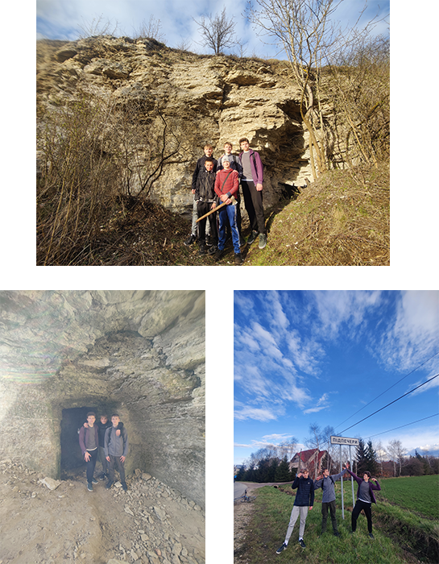

Головна сторінка
Вовчинець
Місце відпочинку
Підпечерська печера

Це була важка та довга дорога, та саме головне - що
ми їхали разом, так як найбільше рахується прогрес.
Ми щиро вам рекомендує самим так проїхатись. Це
корисно для здоров'я і весело